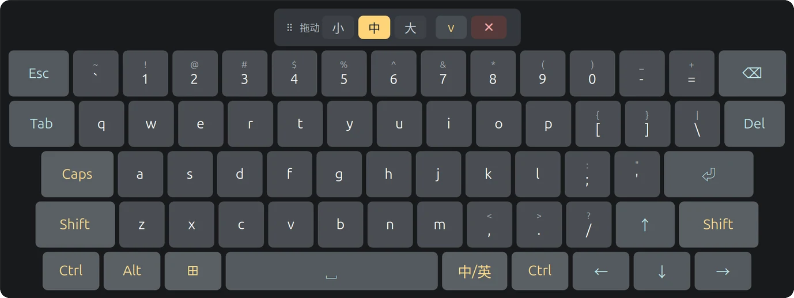
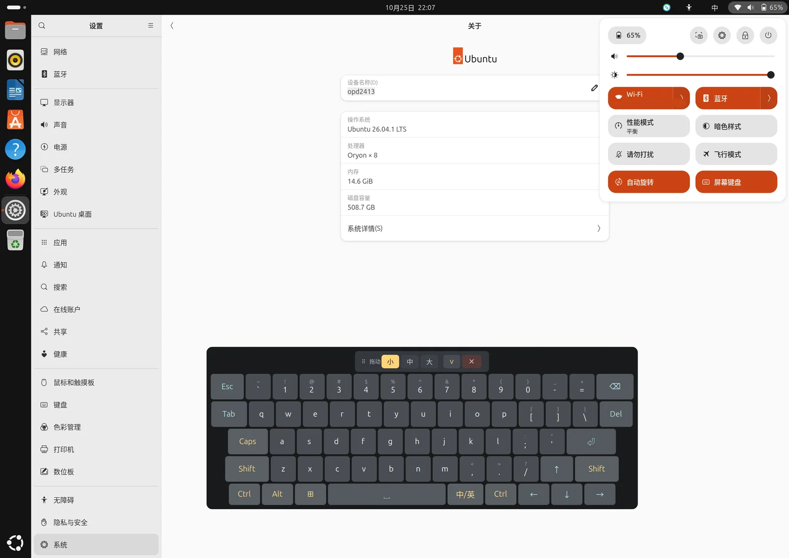
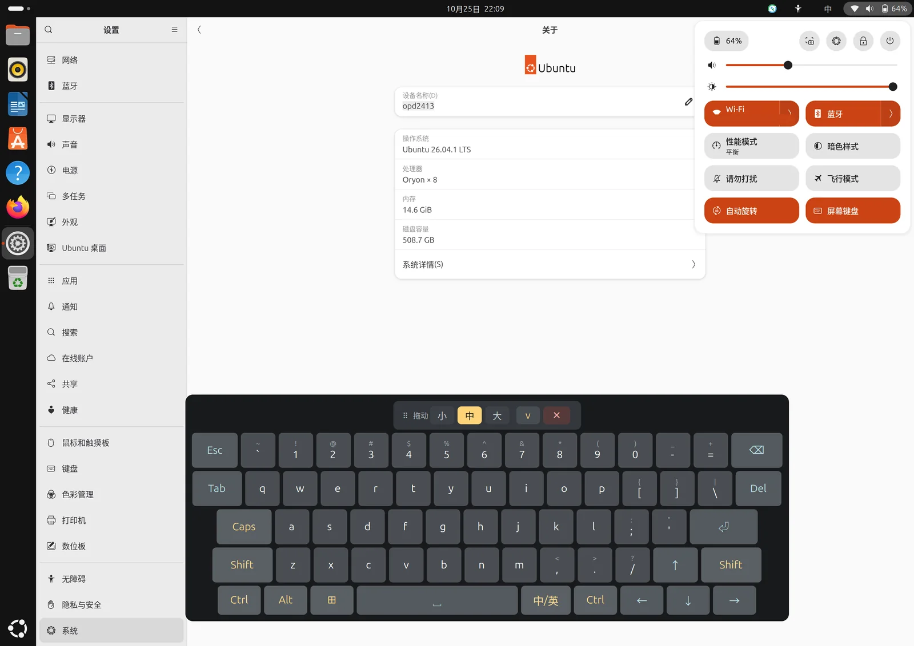
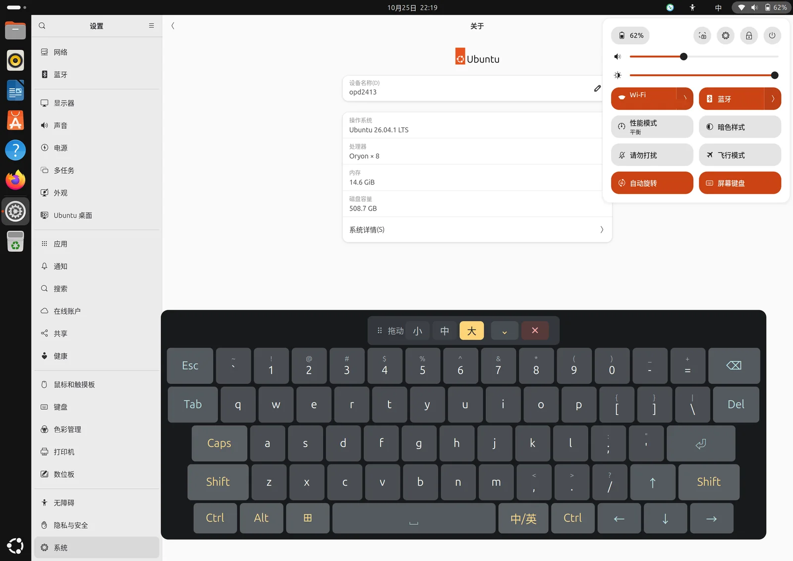

自带的键盘不出现
GNOME 的屏幕键盘只在应用实现 zwp_text_input_v3 时才弹出。Electron / Chromium 默认不实现它，于是点 QQ、Chrome 的输入框，什么都不会弹。
arm64 版 Ubuntu 装在平板上，触屏只用得上一半：GNOME 自带的键盘在 QQ、Chrome 里弹不出来，第三方键盘又打不进字。PAD-OSK 把键盘做进 GNOME Shell —— 按键由合成器注入，应用收到的是真实键盘事件，而键盘本身永远不会抢走输入框的焦点。
需要 GNOME 50 + Wayland，且机器是 arm64；目前只提供 arm64 的 .deb，amd64 还没有构建。

问题
平板只有触屏，而在 GNOME Wayland 下，「弹出键盘」和「把字送进应用」其实是两件事——两件都失败。
GNOME 的屏幕键盘只在应用实现 zwp_text_input_v3 时才弹出。Electron / Chromium 默认不实现它，于是点 QQ、Chrome 的输入框，什么都不会弹。
Onboard 靠 X11 XInput 注入，而 Wayland 明文禁止客户端互相注入输入；wtype 需要的 zwp_virtual_keyboard_v1，mutter 根本没有实现。
xdg-shell 下没有「接受点击、但不拿键盘焦点」这种窗口。手一碰键盘，输入框里的光标就消失了。
所有失败都发生在「窗口」这一层。注入输入和不抢焦点，只有合成器内部同时拥有。
方案
键盘 UI 是 shell 的 chrome 图层而不是窗口；按键通过 Clutter.VirtualInputDevice 注入，mutter 把它当作真实硬件键盘，应用端分辨不出来。
reactive: false，只有按键接收事件，点到空白处照常落到下层窗口。// 合成器内部注入：一行按键就是一次真事件
const seat = Clutter.get_default_backend().get_default_seat();
const vdev = seat.create_virtual_device(
Clutter.InputDeviceType.KEYBOARD_DEVICE);
const t = Clutter.get_current_event_time();
vdev.notify_keyval(t, keysym, Clutter.KeyState.PRESSED);
vdev.notify_keyval(t, keysym, Clutter.KeyState.RELEASED);三档尺寸
按钮在拖动条右侧。切换时逐键就地重设样式，不重建控件——正按着的手指不会落到别的键上；底边保持不动，键盘向上生长。可按您的习惯任选一档。



数值按 1696 px 逻辑屏宽实测标定。三档缩放写在 ~/.config/erhai-osk/position.kf 的 [layout] 组里，范围 0.40–2.00，改完点一下尺寸按钮就生效，不用重新打包。
功能
数字行带完整上档符号、粘滞修饰键、方向键、中英切换——这些只有在屏幕上真打起字来才会发现缺了不行。
数字行（含上档符号）、字母、方向键、Esc / Tab / Del / Enter，不用在符号页之间来回翻。
Ctrl / Alt / ⊞ / Shift / Caps 点一次只作用于下一个键，触摸屏上不用长按。
右下角 中/英 键直发 Super+Space，走 GNOME 输入源切换；ibus-libpinyin 的候选词照常操作。
小 / 中 / 大三档占屏宽 55 % / 66 % / 76 %，拖动条右侧一点即换，跨登录记忆。
按住拖动条定位，⌄ 收起成细条，✕ 关闭；位置与档位重启后还在。
Quick Settings 的「屏幕键盘」开关与应用抽屉里的 PAD-OSK 图标共用同一个状态文件，不会各说各话。
UI 是 shell 图层而不是窗口，点键盘不会把光标从输入框里赶走。
关机、重启、注销对话框出现时键盘自动隐藏，关闭后恢复，不会挡住按钮。
位置、开关状态、尺寸档位写在 ~/.config/erhai-osk/position.kf，卸载也会保留。
安装
GNOME 只在 shell 启动时扫描扩展目录，所以重启是安装的一部分，不是你遇到问题时才做的事。
从 Gitee 或 GitHub 的 Release 页面下载 pad-osk_0.Demo_arm64.deb（13.7 KB）。两个仓库内容对等；目前只有 arm64 构建。
gitee.com/HOSHINO6/ubuntu-pad-keyboard/releases
github.com/HOSHINO61/ubuntu-pad-keyboard/releasesapt 会装好扩展、应用图标和开关脚本；Conflicts / Replaces 会自动顶掉旧的 opd2413-keyboard 包。
# 在安装包所在目录
sudo apt install ./pad-osk_0.Demo_arm64.debshell 启动时才加载扩展。部分机型只注销时，gdm 登录界面可能偶发黑屏且触屏失效，所以直接重启。
sudo rebootgnome-extensions info erhai-osk@local
Demo 起包名由 opd2413-keyboard 改为 pad-osk。apt install 会自动处理，裸 dpkg -i 需要先手动卸旧包。扩展 UUID 和配置目录都没变，位置与档位会保留。
sudo apt remove pad-osk实测范围
任何装了 arm64 版 Ubuntu、跑 GNOME 50 Wayland 的平板都应该能用——但下面这些只在一台机器上验证过：一加 Pad 2 Pro，Ubuntu 26.04.1 LTS，GNOME Shell 50.1，arm64。其它机型请自测。
不再出现「点键盘后光标消失」，也不再出现 X11 铃音——那个铃声正是「按键到了、但没有焦点输入框」的证据。
metadata.json 只声明 shell-version: ["50"]，GNOME 45–49 不会加载；只有 arm64 包，amd64 尚未构建。ibus + ibus-libpinyin（已在 Recommends 里声明）；另外没有长按重复。下载
安装包 pad-osk_0.Demo_arm64.deb，13.7 KB。两个镜像的 tree 完全一致、提交 SHA 不同——两边用各自的账号身份重放提交。中国大陆走 Gitee，海外走 GitHub。